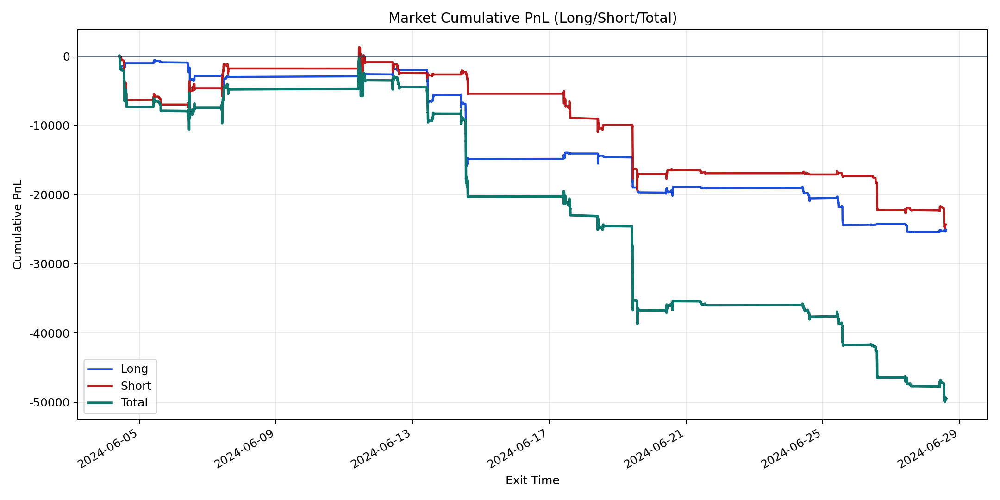
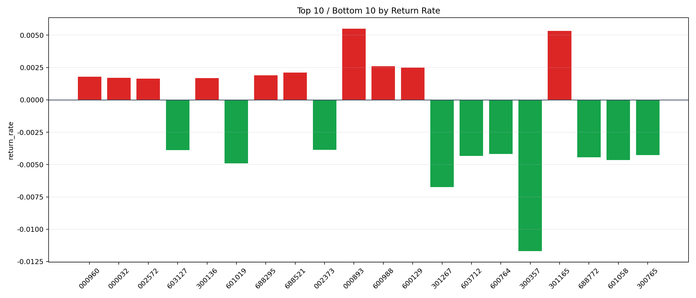

| repo_root | /home/haoranyou/data/output/alpha0.4_1w_5s_3ticks_index_filter/index_weights_500 |
|---|---|
| period_months | 1 |
| period_label | 2024-06-04_to_2024-06-28 |
| start_time | 2024-06-04 09:50:37 |
| end_time | 2024-06-28 14:45:02 |
| n_trades | 6349 |
| n_symbols | 95 |
| total_pnl | -49452.15959999999 |
| long_total_pnl | -25113.87190000005 |
| short_total_pnl | -24338.287699999946 |
| total_entry_notional | 58969566.0 |
| long_entry_notional | 25403735.0 |
| short_entry_notional | 33565831.0 |
| total_return_rate | -0.0008386047745374282 |
| long_return_rate | -0.000988589744775721 |
| short_return_rate | -0.000725091170839773 |
| top_symbols_by_return | ["000893", "301165", "600988", "600129", "688521", "688295", "000960", "000032", "300136", "002572"] |
| bottom_symbols_by_return | ["300357", "301267", "601019", "601058", "688772", "603712", "300765", "600764", "603127", "002373"] |

